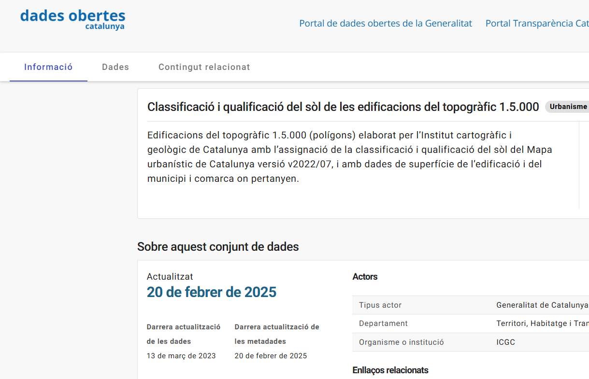

FAIR intro for Digital Soil Mapping
go-fair.org, a practical exercise
Paul van Genuchten
2025-03-19
Findable
Principles on Findability
- Metadata and data should be easy to find for both humans and computers.
- human readable (html)
- machine readible (xml/json/rdf using a standardised model)
- Persistent identification
- Use wise names and locations
- Use an identification proxy (doi.org/handle.net)
Human readable
Machine readable
<script type="application/ld+json">
{
"@context": "http://schema.org",
"@type": "Dataset",
"name": "Classificació i qualificació del sòl de les edificacions del topogràfic 1.5.000",
"description": "Edificacions del topogràfic 1.5.000 (polígons) elaborat per l’Institut cartogràfic i geològic de Catalunya amb l’assignació de la classificació i qualificació del sòl del Mapa urbanístic de Catalunya versió v2022/07, i amb dades de superfície de l’edificació i del municipi i comarca on pertanyen.",
"keywords": [
"urbanisme i infraestructures", ...
</script>Q. Which URI’s are likely more persistent
- https://www.project-marvic.eu/datasets/3265-456-67788?uuid=3265-456-67788
- https://analisi.transparenciacatalunya.cat/Urbanisme-infraestructures/Classificaci-i-qualificaci-del-s-l-de-les-edificac/qgtr-hfva/about_data
- https://134.421.56.113:8080/geoserver/wms
- https://catalegs.ide.cat/geonetwork/srv/dut/catalog.search#/metadata/edafologia-wms
- https://doi.org/10.5281/zenodo.15050634
Q. How can people cite a database which is continuously updated?
Standards for metadata exchange
| Community | Standard | Protocol |
|---|---|---|
| Open data/Sematic web | DCAT | SPARQL |
| Science | Datacite | OAI-PMH |
| Geospatial | iso19115 | CSW |
| Earth observation | STAC | STAC |
| Search engines | Schema.org | json-ld/microdata |
| Ecology | EML |
Catalogues
- Catalogues offer a search functionality on sets of records
- Catalogues exchange records to increase discoverability
- Catalogues cross borders between communities by transforming metadata to relevant standards and protocols
Q. How is google able to locate datasets
Accessible
Principles on Accessibility
- Data are retrievable by their identifier using a standardised communications protocol
- Metadata are accessible, even when the data are no longer available
Data sovereignty
- Publish at an acknowledged repository (zenodo, dataverse) provides persistence
- Use local tools to share data provides full control and trust
Q. Which URI’s are likely more trusted
- https://www.youtube.com/watch?v=YMsrVpVUyOw
- https://zenodo.org/records/15050634
- https://www.openstreetmap.org/relation/349053
- https://administraciodigital.gencat.cat/ca/dades/dades-obertes/informacio-practica/llicencies/
Standardised communications protocol
- Generic protocols, http/ftp
- Standardised (OGC) API’s vs tailored REST API’s
- Traditional WMS, WFS, WCS
- OGCAPI-Features / EDR
- SensorThings API (SoilThings)
Sensorthings

Repository software
- Webdav (or webserver software)
- Zenodo, Dataverse
- Document Management Systems (DMS)
- Cloud storage (Github, Dropbox, Youtube, Amazon, Sharepoint)
Testing tools
- Automated link checking
- Usage logs
- Google Search Console notifies broken links
- Availability monitoring
- Content validation
Interoperable
Principles on Interoperability
- (Meta)data use a formal, accessible, shared, and broadly applicable language for knowledge representation.
- (Meta)data use vocabularies that follow FAIR principles
- (Meta)data include qualified references to other (meta)data
Universal formats
Facilitates accessing a resource with commonly available tooling
- Proprietary vs Open (eg. ecw vs tiff)
- De facto vs Formalised (eg. YAML vs XML)
- Binary vs text based (eg. shapefile vs GeoJSON)
- Cloud optimised vs Cloud native vs traditional (eg. COG vs GeoZarr vs GeoTiff)
- Embedded metadata
Adopt common vocabularies
Adopting a standardised model enables aggregation of data.
- Relational models (INSPIRE GeoPackage, iso28258asPostGres)
- UML/GML models (ISO28258 iso11074)
- Semantic web ontologies (Glosis-ld, vocabs)
- Thesauri (WRB, Gemet, Agrovoc)
Reusable
Principles on Re-use
- (Meta)data are richly described with a plurality of accurate and relevant attributes
- (Meta)data are released with a clear and accessible data usage license
- (Meta)data are associated with detailed provenance
- (Meta)data meet domain-relevant community standards
What if my repository does not offer extended metadata options?
- Use keywords from relevant thesauri to
extend - Add a readme.txt file with extended information
- Data model (which property, unit, analysis procedure)
- Lineage (which data were used as a source)
- Use a stuctured format for readme.
Metadata flows, ISRIC style
Design considerations
A set of conventions and tools to create and share metadata of datasets
Soil scientists know their data, and should prepare the metadata records
Integrate in their environment, stay close to the tools they already use: R, Python, Git, Excel…?
Focus on spatial standards, because we’re in the spatial domain
3 use cases
- A team of soil scientists describes their source data, models and data outputs, for tracability and future re-use
- An organisation aims to share a subset of their resources as open access data
- A community aims to collect relevant remote resources in a thematic catalogue
Describe resources at their source
- Builds on a convention of placing a README.txt file in a project folder, describing the source, attribution.
- Based on standards, using Metadata control file (mcf)
- We’ve built a crawler tool, which
- extracts embedded metadata from data to create initial mcf
- extracts metadata from a set of project folders into a central index
Example flow
- Prepare a set of source data and covariates in a folder, import metadata from external sources
- Model generates a distribution prediction based on inputs, model generates some metadata
- Crawler tool combines generated metadata with embedded metadata (projection, bounds, bands)
- Scientists verifies the generated metadata
- Metadata is ingested into central index, quarable by colleagues
Try it out
docker run -it --rm -v$(pwd):/tmp \
pvgenuchten/geodatacrawler:1.3.5 crawl-metadata \
--mode=init --dir=/tmpShare as open access data
- Import the indexed records in a catalogue
- Use metadata to set up OGC data api’s (WMS, WFS, WCS)
- Add the service endpoint back into the catalogue metadata
Example flow
- Subset of records and data files from previous flow are exported to an external catalogue
- Datasets are made available through conveniance API
- Users find the data in the catalogue and access it through the conveniance API
- Users can suggest improvements to the (meta)data thourgh Git (or email)
A thematic participatory data portal
- Metadata from external sources is harvested (ingested and harmonised) to the central index
- Harvest definition (url + filter + frequency) is stored on Git
- Havests run at intervals using CI-CD pipelines (Github actions)
- Users can suggest changes to the harvest definition (new url’s)
Example flow
- A set of relevant records is identified to be harvested
- Definitions are updated in Git
- Users provide feedback on outdated or missing records
Oh, but this is quite technical!
- ISO19139 and DCAT and their tools (GeoNetwork, CKAN, Dataverse) also have their peculiarities
- Alternative to pull request in GIT? Use git issues and let others in the community fix
- YAML has its caveats (indenting, reserved characters), use YAML check in text editor
- We created a web-form for mcf editing, mdme
Read more

FAIR intro for Digital Soil Mapping training - march 2025